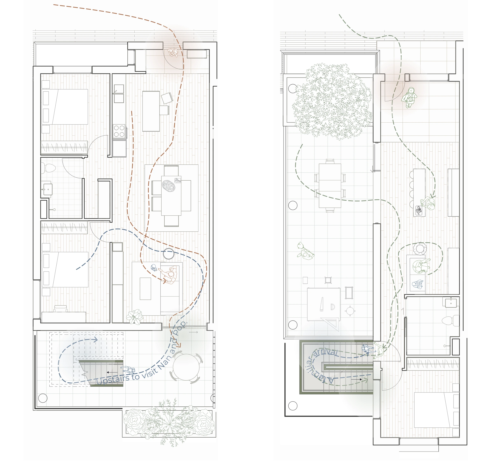
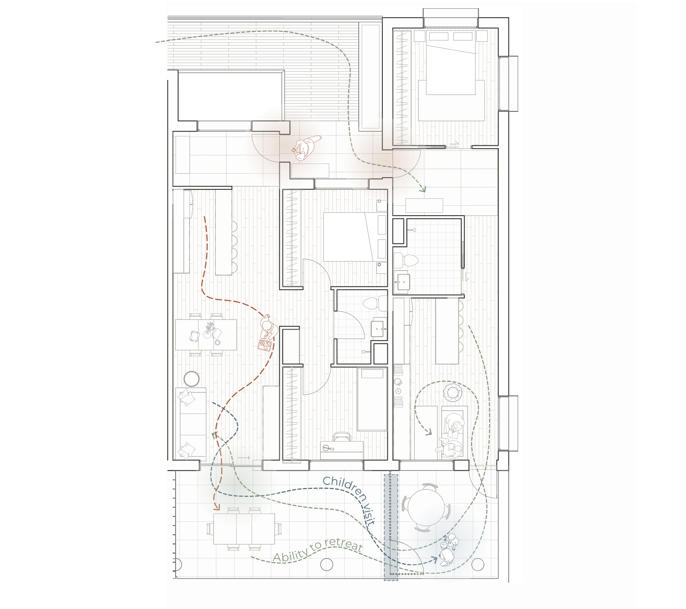
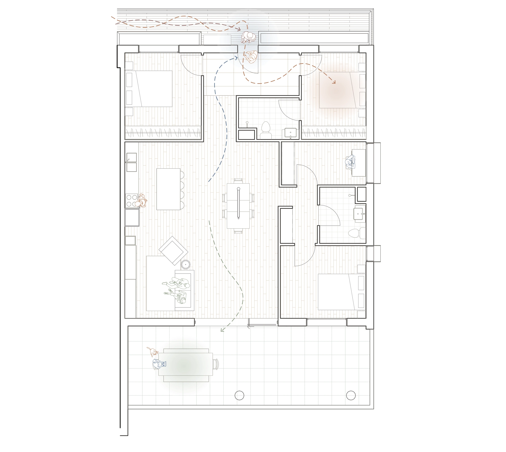

Together,
Apart.
Proximity Without Dependence
How close would you choose to live to family if you could still close your own front door? Together, Apart explores that question through the design of independent homes connected by stairs, balconies, and thresholds.
Read the full exegesis →Ways of living /
together, apart
Stacked homes
The S home sits above the L home. A family stair connects the two levels, while each household retains its own front door.
Read about the connected homes →
Side-by-side homes
The S and M homes sit side by side. Separate front doors let each household decide when to visit.
Read about the connected homes →
XL dwelling
In the XL dwelling, several generations share one home. One bedroom opens off the shared entrance, giving it some separation from family life.
Read about the XL dwelling →